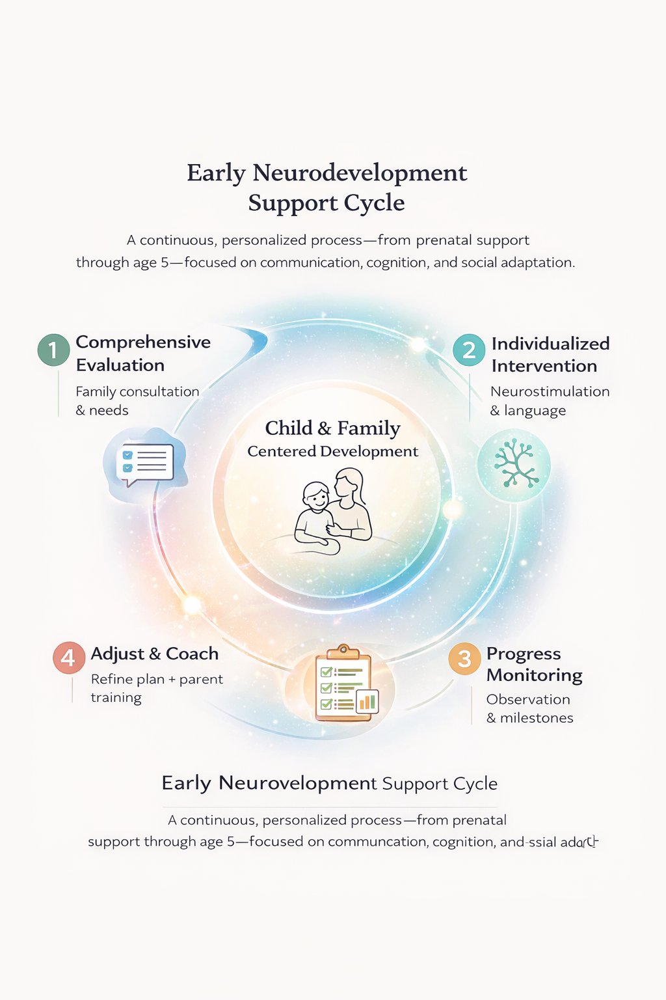
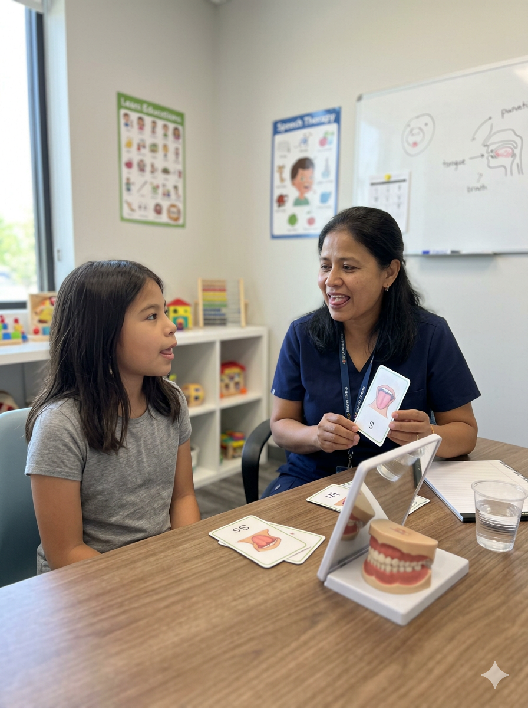
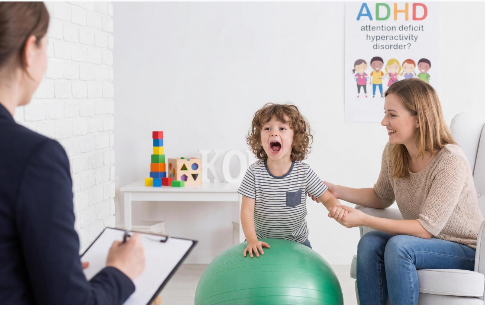

Evaluation + Individual Plan
Comprehensive assessment to identify needs and create a personalized intervention plan with clear goals.
Speech-Language Therapist & Educator
Supporting prenatal development and children from 45 days to 5 years.
I am a Speech-Language Therapist and Educator who supports families from prenatal development through early childhood. I’ve worked with children with permanent and transitional special needs, guided parents and educators through workshops, and built individualized plans that strengthen communication and development. As a mother, daughter, and professional, I know this journey is not only clinical—it’s deeply personal.
Practical guidance, clear plans, and supportive coaching to help you feel confident at home—prenatal through age 5.
We start with your concerns, assess needs, and build a plan that fits your family.
Simple routines and activities to support communication and early development every day.
Clear goals and check-ins so you can see growth over time.
Workshops and training for early childhood educators and centers—best practices you can apply in the classroom.
Developmental stimulation techniques adapted to real classroom routines.
Tools to support language development and early interaction.
Aligned goals with families and specialists for consistent outcomes.
Referrals and interdisciplinary collaboration are welcome. We coordinate to support families with evidence-based early intervention.
Clear intake, goal-setting, and family-centered follow-up.
Coordination with healthcare and educational teams for integrated support.
Services can be delivered in preschools, clinics/hospitals, and child-focused environments.
Individualized support for prenatal development and children from 45 days to 5 years—focused on communication, cognition, and social adaptation.

Comprehensive assessment to identify needs and create a personalized intervention plan with clear goals.

Stage-based sessions designed to support cognitive growth and social adaptation.

Support for speech/language needs, including autism, Down syndrome, and hearing loss.
Workshops and coaching so families can confidently support development at home.
Training for teachers and preschools to implement early stimulation best practices in the classroom.
Coordination with healthcare and education professionals for a comprehensive, integrated approach.
Send a request and we’ll contact you to schedule an evaluation.